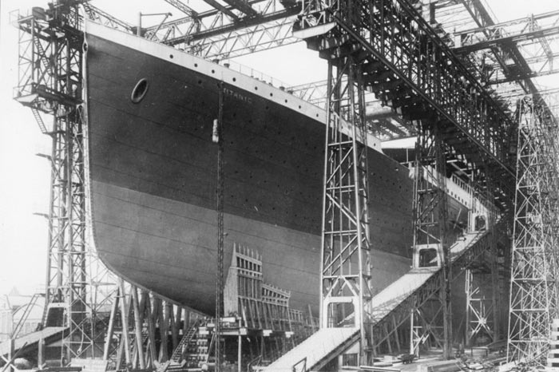

.jpg)
Titanic White Star Line'a ait bir transatlantik gemisiydi, Harland and Wolff tersanelerinde (Belfast, Kuzey İrlanda) üretilmiş ve rakip firma Cunard Line'ın RMS Lusitania ve RMS Mauretania gemileriyle rekabet etmesi için tasarlanmıştır. Titanic'in yanı sıra Olympic Sınıfı kardeşleri de üretilmiştir. Bunlar, ilk üretilmiş olan RMS Olympic, daha sonra üretilecek olan RMS Britannic'ti (diğer adı Gigantic). Gemilerin tasarımcıları ise hem Harland and Wolff ve White Star'da yönetici olan William Pirrie, inşa yöneticisi ile dizayn bölümünün başı Alexander Carlisle ve gemi mühendisi Thomas Andrews'dur. Gemi ayrıca Amerikan yatırımcı John Pierpont Morgan tarafından finanse ediliyordu.
RMS Titanic'in yapımına 31 Mart 1909'da başlanmış ve üzerinde 26 ay boyunca 11.300 kişi çalışmıştır. Geminin gövdesi 31 Mayıs 1911'da suya indirildi ve tamamlanması için bir yıl daha gerekti. Geminin inşası 2 Nisan 1912'de tamamlanmıştır.
Titanic'in 1.sınıf bölümündeki büyük merdivenler
Titanic 269 m uzunluk, 28.2 m genişlik, 66,000 gros ton ağırlığa sahipti. Geminin 3 pervanesine güç sağlayan iki zamanlı dört silindir, üç aşamalı, buharlı itici motorlar ve düşük basınçlı tribünler bulunmaktaydı. Bu motorlara 159 kömür fırını tarafından ateşlenen 29 kazan enerji veriyordu ve bu da geminin yaklaşık olarak 43 km/s maksimum hıza ulaşmasını mümkün kılıyordu. Gemideki dört bacadan sadece üçü işlevseldi, dörtdüncü baca sadece geminin daha çarpıcı gözükmesi için eklenmişti.Gemi toplam'da 3,547 yolcu ve mürettabat taşıyabiliyordu. Aynı zamanda posta da taşımaktaydı. Baş harfinin ilk kısmındaki ön ekte bu ifade bulunmaktadır
